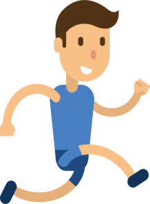
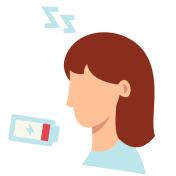

ДВИЖЕНИЕ -
ЭТО ЖИЗНЬ!

Вред офисной работы без движения
В современном мире многие из нас проводят большую часть своего времени за офисным столом. Несмотря на то что такая работа может казаться комфортной и безопасной, она может иметь серьезные негативные последствия для здоровья. Рассмотрим основные риски, связанные с малоподвижным образом жизни, характерным для офисной работы.
Проблемы с опорно-двигательным аппаратом
Долгое сидение в одном положении приводит к напряжению мышц и суставов. Это может вызвать боли в спине, шее и плечах, а также привести к развитию хронических заболеваний, таких как остеохондроз или сколиоз. Неправильная осанка и недостаток физической активности способствуют ухудшению состояния позвоночника.
Увеличение риска сердечно-сосудистых заболеваний
Малоподвижный образ жизни значительно увеличивает риск развития сердечно-сосудистых заболеваний. Сидячая работа способствует повышению уровня холестерина и артериального давления, что в свою очередь может привести к инфарктам и инсультам. Регулярная физическая активность помогает поддерживать здоровье сердечно-сосудистой системы.
Проблемы с обменом веществ
Недостаток движений негативно сказывается на обмене веществ, что может привести к набору веса и даже к ожирению. Сидячая работа снижает уровень сжигания калорий, а это может стать причиной развития диабета 2 типа и других метаболических нарушений.
Психологические проблемы
Офисная работа без движения может также негативно влиять на психическое здоровье. Исследования показывают, что малоподвижный образ жизни связан с повышенным уровнем стресса, тревожности и депрессии. Физическая активность, наоборот, способствует выработке эндорфинов — гормонов счастья, которые улучшают настроение и общее самочувствие.
Усталость и снижение продуктивности
Долгие часы сидения за компьютером могут вызывать умственное истощение и снижение концентрации. Физическая активность помогает улучшить кровообращение и снабжение мозга кислородом, что способствует повышению работоспособности и креативности.
Как избежать вреда офисной работы?
Чтобы минимизировать негативное влияние офисной работы на здоровье, важно внедрить в свою повседневную практику небольшие изменения: